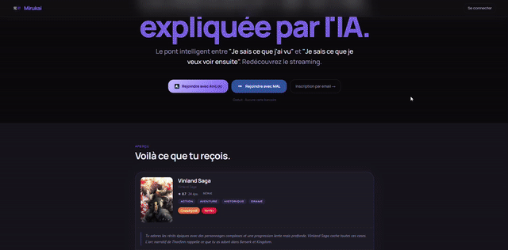

Mirukai est un projet personnel né de ma passion pour les animés et de ma volonté de maîtriser l'écosystème JavaScript moderne. Le nom vient du japonais : Miru (見る, regarder) et Kai (界, monde) "Trouve le prochain animé que tu vas aimer."
Développé seul, de la conception à la mise en production, Mirukai est une application web full-stack en production accessible publiquement sur mirukai.rlbrt.fr. Le défi central : recommander intelligemment un animé adapté à chaque utilisateur en combinant son historique AniList, un modèle vectoriel de goûts et un LLM pour des explications personnalisées.
Ce projet illustre ce que le cursus académique n'enseigne pas directement : l'autonomie technique complète, depuis le choix de la stack jusqu'aux décisions d'architecture en production, sans encadrement ni contrainte pédagogique.

Le cœur de Mirukai est un algorithme de recommandation vectoriel construit sur un catalogue PostgreSQL de ~3500 animés synchronisé quotidiennement depuis l'API AniList.
runSimulations(5, pool=30) : 5 tirages probabilistes dans le top-30 candidats, le gagnant étant celui avec le meilleur score communautaire AniList pour éviter la répétition du même animé #1 tout en garantissant la qualitéiron-session (cookies httpOnly), mots de passe hachés avec scrypt natif Node.js (timing-safe)pickDiverseReferences() Sélection intelligente de 2-4 animés de la liste utilisateur maximisant la diversité de genres pour alimenter le LLM avec des références équilibréesdocker compose up --no-deps)mirukai.rlbrt.fr) et staging (dev.mirukai.rlbrt.fr) gérés depuis les branches git main et devcoldStart: true dans la réponse API pour adapter l'UItechnicalName, TTL 15 jours, rate limiting 600ms entre requêtes, fallback sur les liens externes AniList si données absentes.env séparés par environnementMirukai représente ma capacité à mener un projet de bout en bout, hors cadre académique : choix de la stack, conception de l'algorithme, intégration d'APIs tierces, déploiement et maintenance d'une application en production réelle. Chaque décision technique du modèle vectoriel au choix de Redis comme cache distribué a été prise et assumée seul.
Il illustre ce que le cursus n'enseigne pas directement : résoudre des problèmes concrets (cold-start, latence LLM, API non documentée) avec les contraintes d'un service en production. Ce projet personnel, accessible publiquement, est la preuve de mon engagement au-delà des projets académiques et de ma passion durable pour le développement web.